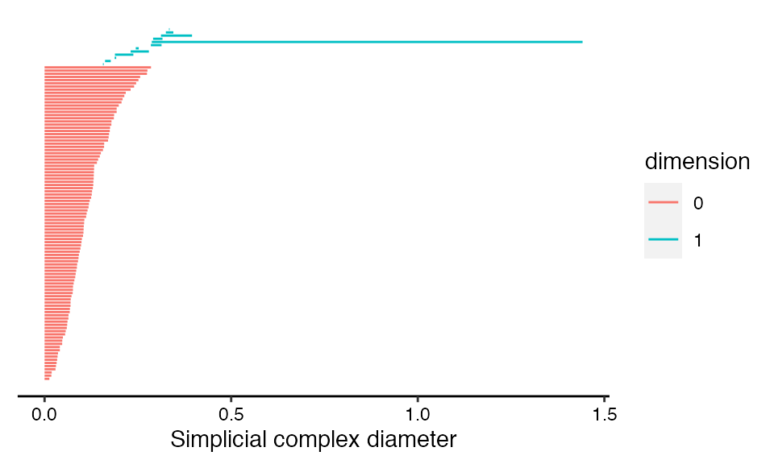

Visualizing persistent homology with ggtda
Jason Cory Brunson, Jacob G. Scott, Raoul R. Wadhwa
2020-11-18
Source:vignettes/phom.Rmd
phom.RmdOpening
The ggtda package provides users with ggplot2 layers to visualize persistent homology, especially as part of a topological data analysis pipeline. It Depends on ggplot2, which is loaded and attached when ggtda is. This vignette shows how to use ggtda to construct publication-quality barcode (Carlsson et al. 2005; Ghrist 2008), and persistence diagrams (Edelsbrunner, Letscher, and Zomorodian 2002; Wadhwa et al. 2018).
We set up our environment by attaching ggtda. Other packages (Suggests in the ggtda DESCRIPTION) will be called to generate a simulated data set and to compute persistent homology.
Sample data
We use the tdaunif package to generate a sample from an interesting topological space that requires 4 Euclidean dimensions to embed: the real projective plane, denoted \(\mathbb{P}^2(\mathbb{R})\).1 The sample of 240 points is generated uniformly from a commonly-used embedding \(\mathbb{P}^2(\mathbb{R}) \to \mathbb{R}^4\) of the 2-dimensional manifold into 4-dimensional Euclidean space, with some 4-dimensional gaussian noise introduced.
set.seed(7480L) rpp <- tdaunif::sample_projective_plane(n = 240L, sd = 0.005)
We can build some limited intuition about the space by plotting 2-coordinate projections from the point cloud:
pairs(rpp, pch = 16L, cex = .5)

The real projective plane has known homology groups, given here over coefficients in \(\mathbb{F}_2\), the field of two elements:
\[ \tilde{H}_k(\mathbb{P}^2(\mathbb{R});\mathbb{F}_2)=\begin{cases} 0 & k=0 \\ \mathbb{F}_2 & k=1 \\ 0 & k>1 \end{cases} \]
Each group \(\tilde{H}_k\) indicates the complexity of the space in a different dimension \(k\). For example, the real projective plane has no gaps between connected components and no interior separated from its exterior, so its degree-0 and degree-2 homology groups are null.2 It does, however, have a sort of “hole”, or degree-1 feature, which is detected by a single copy of the field of coefficients.3 The ranks of these three groups—\(0\), \(1\), and \(0\)—count the features of each degree we should expect to emerge as the most persistent.
Persistent homology
We will calculate the persistent homology of our sample using the ripserr package, specifying the prime field p = 2L. We will then plot several visualizations of the resulting persistent pairs using ggtda. Because the space from which the sample was taken is 2-dimensional, we run the calculation up to dimension dim = 2L:
# calculate persistent homology rpp_phom <- as.data.frame(ripserr::vietoris_rips(rpp, dim = 2L, p = 2L)) # format persistence data for ggplot2 rpp_phom$dimension <- as.factor(rpp_phom$dimension)
In keeping with tidy principles, ripserr returns a data frame whose observational units (one per row) are homological features. We take a quick peek with head() and tail() to see how long the features of this point cloud tend to persist:
# first few features (lowest-dimensional) head(rpp_phom) #> dimension birth death #> 1 0 0 0.007583014 #> 2 0 0 0.012796774 #> 3 0 0 0.014028751 #> 4 0 0 0.016235590 #> 5 0 0 0.016579049 #> 6 0 0 0.016774255 # last few features (highest-dimensional) tail(rpp_phom) #> dimension birth death #> 292 1 0.11510766 0.11754975 #> 293 1 0.09443284 0.12657100 #> 294 1 0.08753047 0.09689070 #> 295 1 0.08421899 0.08618699 #> 296 1 0.05610310 0.05891388 #> 297 1 0.05048809 0.05320885
Since we are interested in persistent features, let us have a look at the most persistent of these pairs:
rpp_pers <- transform(rpp_phom, persistence = death - birth) head(rpp_pers[with(rpp_pers, order(-persistence)), ], n = 12L) #> dimension birth death persistence #> 272 1 0.2678936 0.8587924 0.5908988 #> 259 1 0.3266813 0.6612964 0.3346152 #> 239 0 0.0000000 0.3272253 0.3272253 #> 238 0 0.0000000 0.3228169 0.3228169 #> 237 0 0.0000000 0.3162588 0.3162588 #> 236 0 0.0000000 0.3111643 0.3111643 #> 235 0 0.0000000 0.3082050 0.3082050 #> 234 0 0.0000000 0.3080866 0.3080866 #> 233 0 0.0000000 0.2971045 0.2971045 #> 232 0 0.0000000 0.2964972 0.2964972 #> 231 0 0.0000000 0.2957626 0.2957626 #> 230 0 0.0000000 0.2955564 0.2955564
This table reveals that a single feature dominates the rest, with persistence nearly 0.6 versus just over 0.3 for the next-most persistent features. Nevertheless, graphical visualization would allow us to more easily and effectively interpret the complete collection of features than printing raw data. We will start off by plotting this as a topological barcode.4
Topological barcode
Topological barcodes plot features as vertically stacked horizontal bars. Each bar corresponds to a single feature with the left boundary of the bar corresponding to the ball radius at which the feature appears in the simplicial complex (column "birth" in rpp_phom) and the right boundary of the bar corresponding to the radius at which the feature disappears (column "death"). Creating a topological barcode with ggtda is straightforward using geom_barcode(), with the persistence aesthetics start and end:
# create topological barcode with appropriate theme ggplot(rpp_phom, aes(start = birth, end = death, group = dimension, colour = dimension)) + geom_barcode() + xlab("Simplicial complex diameter") + theme_barcode()

This layer is coded as a graphical element (“geom”) rather than as a statistical transformation (“stat”) because the data undergo no computations—only aesthetic mappings—before the barcode is rendered. The group aesthetic orders features by dimension to ensure that all 0-dimensional features a plotted in one group, all 1-dimensional features above them, and so on. The color aesthetic visually discriminates between features of different dimensions.
Given that \(\mathbb{P}^2(\mathbb{R})\) has first homology group of rank 1, the dominant 1-dimensional feature (or 1-cycle) appears as expected. Other features of, say, secondary persistence also emerge, and we will discuss them later, after we have showcased some alternative representations of these data.
Persistence diagrams
Persistence diagrams plot features as points on a scatterplot. Each point corresponds to a single feature, so that features with equal births and deaths yield overlapping points. They are generated using stat_persistence() as below, using the same persistence aesthetics. This is indeed a stat layer, in that the coordinates are calculated differently from the data depending on the layout. By default, persistence diagrams take the conventional “diagonal” layout: A feature born at \(b\) and dead at \(d\) is located at coordinates \((b,d)\).
# create flat persistence diagram with appropriate theme ggplot(rpp_phom, aes(start = birth, end = death, shape = dimension, colour = dimension)) + stat_persistence() + geom_abline(slope = 1, intercept = 0) + coord_equal() + xlab("Feature appearance") + ylab("Feature disappearance") + theme_persist()

The reference line \(y=x\) often aids the interpretation of diagonal persistence diagrams, so we add one with geom_abline(). Aesthetically, it is also generally pleasing to have the vertical and horizontal axes on a fixed coordinate system with both plotting the same range. The shape and colour aesthetics redundantly discriminate between features of different dimensions. This is particularly useful when one of the aesthetics (e.g. color) is rendered ineffective (e.g. for color-blind viewers).
Flat persistence diagrams can also be generated with stat_persistence(), by setting the diagram parameter to "flat". In this layout, the horizontal coordinate is equal to the radius at which each feature appears (column "birth") and the vertical coordinate is equal to the persistence of the feature (the difference between "death" and "birth"). While these dimensions can be understood to lie on the same scale, the usefulness of the plot lies in recognizing the most persistent features by height and their relative appearences by birth, so it is less essential to fix the aspect ratio to 1.
# create diagonal persistence diagrams with adjustments ggplot(rpp_phom, aes(start = birth, end = death, shape = dimension, colour = dimension)) + stat_persistence(diagram = "flat") + xlim(c(0, 1.5)) + ylim(c(0, 1.5)) + xlab("Feature appearance") + ylab("Feature persistence") + theme_persist()

Interpretation
As mentioned above, the dominant feature detected in the point cloud rpp is a 1-cycle that persists from radius 0.27 to radius 0.86, nearly twice the persistence of any other feature. Still, the flat persistence diagram reveals that some other degree-1 and -2 features stand out from the rest.
One way to convince ourselves that these are artifacts of noise in the sample is to compare their persistence to that of the degree-0 features. The latter are merely disconnected components, which finally disappear when the radius becomes large enough for the filtration to link every sampled point to every other. That the most persistent 1- and 2-cycles (other than the dominant 1-cycle) persist for no more than this “cut radius” of the point cloud suggests that they can plausibly be attributed to noise.
In particular, the most persistent 2-cycle, which stands out clearly from is fellow 2-cycles, may be understood as a geometric rather than a topological feature. Each Vietoris–Rips complex of the filtration is built of simplices on points within the associated distance (the radius) of each other—and these distances are in \(\mathbb{R}^4\), not in \(\mathbb{P}^2(\mathbb{R})\). When the radius can reach between regions of the manifold embedded nearby in 4-space but not completely across, some purely topological features may collapse into features that are artifacts of the embedding. For a more intuitive example, imagine sampling points from a bottle with a narrow spout: A cover that connects nearby points will effectively plug the spout well before it fills the interior of the bottle, producing a persistent degree-2 feature though the manifold has null degree-2 homology.
In real-world settings, we may rarely have topological insight beyond a point cloud itself. So, while we can be wary of homological features of “middling” persistence, we should also not dismiss them.
ggplot2 functionality
Plots produced using ggtda can be handled like any other "ggplot" objects—for example, they can be saved using ggplot2::ggsave(). Running the following line of code will save the most recent plot (the flat persistence diagram) as a PNG image file named my-plot.png in the local working directory.
ggsave("my-plot.png")
References
Bauer, Ulrich. 2019. “Ripser: Efficient Computation of Vietoris–Rips Persistence Barcodes.”
Carlsson, Gunnar, Afra Zomorodian, Anne Collins, and Leonidas Guibas. 2005. “Persistence Barcodes for Shapes.” International Journal of Shape Modeling 11 (2): 149–87.
Edelsbrunner, Herbert, David Letscher, and Afra Zomorodian. 2002. “Topological Persistence and Simplification.” Discrete and Computational Geometry 28 (4): 511–33.
Ghrist, Robert. 2008. “Barcodes: The Persistent Topology of Data.” Bulletin of the American Mathematical Society 45 (1): 61–75.
Wadhwa, Raoul R., Andrew Dhawan, Drew F. K. Williamson, and Jacob G. Scott. 2018. “A Flat Persistence Diagram for Improved Visualization of Persistent Homology.”
For a simpler example using a noisy circle, see the README.↩︎
Like most TDAs of point clouds, Ripser computes reduced homology \(\tilde{H}_k\), so that all homological features eventually die as the radius of the cover exceeds the diameter of the point cloud. The (non-reduced) degree-0 homology \(H_0\) of any connected topological space has rank 1, which would result in an infinite degree-0 feature in persistent homology.↩︎
Ripser (Bauer 2019) computes persistent homology using prime field coefficients for any prime characteristic \(p<2^{16}\). Over integer coefficients, \(\tilde{H}_1(\mathbb{P}^2(\mathbb{R}))=\mathbb{Z}/2\mathbb{Z}\) is cyclic; in our discussion we dodge this issue of torsion.↩︎
Although
ripserr::vietoris_rips()calculates persistent homology using the Vietoris–Rips filtration, persistent homology from another filtration (e.g. of Čech complexes) can also be visualized with ggtda. We will therefore label the axes in a generic manner that can then be specialized by users depending on their specific context.↩︎